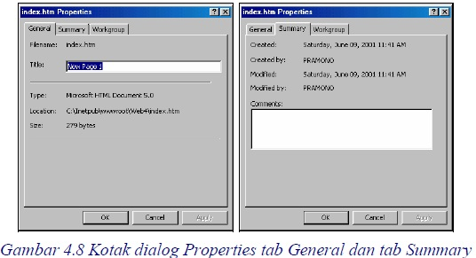
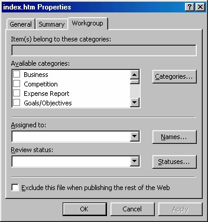

4 Properti dan ganti nama halaman
4.1 Mengatur properti
Setiap halaman FrontPage memiliki seperangkat properti yang menyediakan
informasi tentang halaman tersebut. Komentar ini bisa Anda lihat tetapi tidak akan
ditampilkan pada browser.
Anda bisa memanfaatkan komentar ini untuk menampung informasi tertentu
misalnya trik untuk membuat halaman dengan cepat atau cara membuat suatu
tampilan khusus.
Beberapa properti berisi ringkasan informasi yang Anda masukkan, dan yang lain
berisi informasi yang ada secara otomatis. Untuk menampilkan sebuah properti
halaman atau memasukkan informasi baru, caranya adalah:
1. Pada Folder List klik file halaman. Lalu aktifkan perintah Edit _ Properties
untuk membuka kotak dialog Properties.

2. Perhatikan informasi yang ada pada tab-tab yang ada, lihat Gambar 4.8. Anda
bisa menambahkan informasi berupa komentar pada kotak isian Comment.
3. Apabila Anda bekerja di dalam suatu tim, komentar adalah cara yang baik untuk
memberi tahu anggota lain apa yang sudah Anda dilakukan dan apa yang harus
dilakukan selanjutnya terhadap sebuah halaman. Semua ini ditampung pada tab
workgroup.

Gambar 4.9 Pilihan pada workgroup
4. Klik tombol OK. Properti baru tersebut akan disimpan di dalam halaman.
4.2 Mengganti nama file
Setelah selesai bekerja dengan FrontPage XP tentunya Anda harus menutupnya,
untuk mengurangi beban memori komputer. Baiklah, cara pengubahan nama file di
Folder List adalah:
1. Pada Folder List klik file yang ingin Anda ganti namanya. Warna latar belakang
nama file tersebut berubah menjadi biru.
2. Tuliskan nama barunya.
3. Tekan Enter, FrontPage XPakan mengubah namanya.
Copyright © Herlan Lesmana
Created with the Freeware Edition of HelpNDoc: Easy to use tool to create HTML Help files and Help web sites